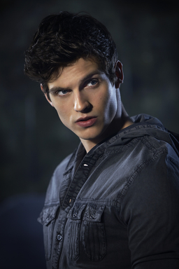

Mentor to Scott Mcall. He is an alpha wolf for season 2,3 and 6(after killing Peter Hale). He comes back to Beacon Hills in season 1 in order to find his sister's killer, Peter Hale.
Main character and true alpha. In the very first episode Scott's bestfriend, Stiles, convinces him to look for half of a body(only one half was found). While in the woods he was attacked by Peter Hale...and BOOM werewolf.
Stiles Stilinski is the best friend of Scott Mcall and overall problem solver of the show(human who at one point got possesed by a nogitsune). He is also the son of the sheriff.
Typical highschool jock who plays the antagonist till season 5(Kanima/beta werewolf). It's important to note that he dated Lydia Martin, the love of Stiles' life.
The love of Scott's life. Part of the most notorious Hunter klan in the Western Hemisphere, The Argents(meaning silver)(hunter). She dies in the final battle of season 3, but is a constant motivation for the rest of the show.
After being bitten by Peter Hale in season 2, Lydia starts having premonitions(banchee). She, along side Stiles, solves a lot of the problems that plague Beacon Hills.
Starts the show in season 2 as part of a rival pack. Derek turns him so that he can kill his father, but Jackson kills him first.(beta werewolf).
Scott originally turns him in order to save his life(beta werewolf). This character unintentially causes a lot of problems in season 4, he has intermittent explosive disorder.